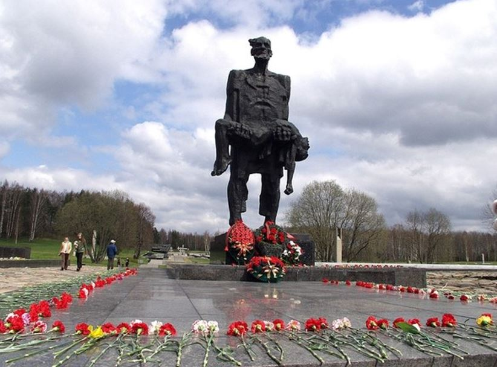

«Память и боль белорусской земли»
Список деревень, сожжённых только лишь в Минском районе, и план мер по выполнению поручений, изложенных в статье 4 Закона Республики Беларусь от 5 января 2022г. №146-З «О геноциде белорусского народа»
Список сожжённых деревен Минского района
| Название деревни | Довоенный район | Дата разрушения | Домов до войны | Людей до войны | Разрушено домов | Убито людей | восстановлена | |
|---|---|---|---|---|---|---|---|---|
| 1 | Бардиловка | Минский | апрель 1944 | 60 | 268 | 52 | 6 | восстановлена |
| 2 | Бахметовка | Заславский | апрель 1943 | 30 | 132 | 30 | 115 | |
| 3 | Богиновка | Заславский | январь 1944 | 12 | 50 | 9 | 2 | не восстановлена |
| 4 | Булаши | Заславский | май 1943 | 8 | 31 | 8 | 9 | не восстановлена |
| 5 | Вышково | Заславский | май 1943 | 40 | 228 | 40 | 190 | |
| 6 | Головачи | Заславский | октябрь декабрь 1943 | 0 | 0 | 0 | 0 | восстановлена |
| 7 | Горани | Минский | июнь 1944 | 17 | 79 | 15 | 2 | |
| 8 | Гребенка пос. | Минский | апрель-июль 1943 апрель 1944 | 10 | 0 | 7 | 5 | восстановлена |
| 9 | Дубицкая Слобода | Минский | апрель 1944 | 45 | 273 | 17 | 5 | восстановлена |
| 10 | Дубки | Минский | осень 1943 апрель 1944 | 14 | 0 | 10 | 6 | не восстановлена |
| 11 | Ермаки | Заславский | март 1943 | 15 | 25 | 14 | 9 | |
| 12 | Жуковка | Заславский | сентябрь 1943 март 1944 | 35 | 121 | 10 | 0 | восстановлена |
| 13 | Закружка | Минский | апрель 1944 | 56 | 213 | 37 | 10 | восстановлена |
| 14 | Звинячи | Заславский | май 1944 | 17 | 86 | 17 | 7 | |
| 15 | Кайково | Минский | осень 1943 апрель 1944 | 85 | 365 | 39 | 22 | восстановлена |
| 16 | Кайковo пос. | Минский | апрель 1944 | 39 | 0 | 15 | 6 | |
| 17 | Каменец | Заславский | декабрь 1942 январь 1943 | 64 | 211 | 64 | 2 | |
| 18 | Камки | Заславский | сентябрь октябрь 1943 | 27 | 150 | 35 | 86 | |
| 19 | Колоницы | Заславский | май 1943 | 47 | 200 | 47 | 181 | не восстановлена |
| 20 | Кузьмёнка | Минский | ноябрь 1943 | 9 | 62 | 9 | 14 | не восстановлена |
| 21 | Курганы | Заславский | апрель 1943 | 0 | 0 | 0 | 0 | восстановлена |
| 22 | Латыговка | Заславский | декабрь 1942 апрель 1944 | 0 | 0 | 0 | 0 | восстановлена |
| 23 | Лесины | Заславский | май 1943 | 29 | 243 | 29 | 183 | |
| 24 | Лисицы | Заславский | декабрь 1943 | 12 | 20 | 4 | 8 | восстановлена |
| 25 | Лошица | Минский | апрель 1944 | 100 | 0 | 500 | 2 | восстановлена |
| 26 | Лукаши | Заславский | апрель 1944 | 0 | 0 | 0 | 35 | |
| 27 | Лысовичи | Заславский | апрель 1944 | 39 | 148 | 20 | 5 | восстановлена |
| 28 | Михановичи пос. | Минский | апрель 1944 | 11 | 0 | 7 | 4 | восстановлена |
| 29 | Новый Двор | Заславский | март 1944 | 39 | 0 | 0 | 0 | восстановлена |
| 30 | Огарки | Заславский | март октябрь декабрь 1943 | 56 | 217 | 0 | 25 | восстановлена |
| 31 | Паперня | Минский | 27 сентября 1943 | 44 | 230 | 44 | 55 | |
| 32 | Плебанцы | Минский | апрель-июнь июль сентябрь 1943 апрель 1944 | 70 | 260 | 53 | 38 | |
| 33 | Пральня | Заславский | май 1943 | 0 | 0 | 0 | 0 | восстановлена |
| 34 | Ревкутевичи | Заславский | сентябрь 1943 | 62 | 231 | 50 | 6 | восстановлена |
| 35 | Рогова | Заславский | июнь 1943 | 22 | 93 | 11 | 18 | восстановлена |
| 36 | Скрановичи | Заславский | март 1944 | 50 | 104 | 31 | 0 | |
| 37 | Соломоречье | Заславский | май 1943 | 17 | 62 | 17 | 47 | не восстановлена |
| 38 | Старое Село | Заславский | январь 1944 | 35 | 180 | 34 | 14 | |
| 39 | Танелево | Заславский | январь 1944 | 17 | 0 | 11 | 0 | восстановлена |
| 40 | Танелево | Минский | 1944 | 0 | 0 | 0 | 0 | |
| 41 | Чировичи | Заславский | декабрь 1943 | 0 | 0 | 32 | 4 | восстановлена |
| 42 | Чуриловичи | Минский | апрель 1944 | 46 | 195 | 40 | 23 | |
| 43 | Шепели | Заславский | сентябрь 1943 март 1944 | 40 | 136 | 19 | 1 | восстановлена |
| 44 | Щербины | Заславский | март 1943 | 43 | 187 | 22 | 15 | восстановлена |
Мемориалы
Ничто не забыто: 7 мемориалов, посвященных сожженным в войну белорусским деревням
22 июня - годовщина начала Великой Отечественной войны. Двадцать семь миллионов советских жертв, из них чуть меньше 9 миллионов -
военные потери. На белорусской земле было разрушено и сожжено 9.200 населенных пунктов, из которых более 5 тысяч - вместе с населением
во время карательных операций. Представляет 7 мемориалов на месте сожженных белорусских деревень.
Хатынь (Логойский район, в 5 км к востоку от 54-го км автотрассы М3 Минск - Витебск)

Предыстория: утром 22 марта 1943 года в 6 км от Хатыни партизаны уничтожили штабную автомашину, в которой находился гауптман Ганс
Вёльке - один из офицеров 118-го охранного полицейского батальона вермахта в Плещеницах. В тот же день солдаты этого батальона и бойцы
карательного подразделения СС "Дирлевангер" вошли в деревню, в которой проживало около 150 человек. Жителей согнали в сарай, обложили
его соломой, облили бензином и подожгли. В огне сгорели 149 жителей, из них 75 детей. Трое детей во время облавы успели убежать в лес,
две девушки выбрались из горящего сарая, еще два мальчика выжили в огне; из взрослых выжил лишь один - кузнец Иосиф Каминский. Деревня
не была восстановлена.
Память сотен деревень, сожженных фашистами во время войны, решили "мемориализировать" только через двадцать лет после великой победы
(до этого был лишь небольшой памятник). В конкурсе, который стартовал в марте 1967 года, победил коллектив авторов: Юрий Градов,
Валентин Занкович, Леонид Левин, Сергей Селиханов. Открытие комплекса состоялось 5 июня 1969 года.
Доминанты комплекса: шестиметровая скульптура "Непокоренный человек" (прообразом стал Иосиф Каминский, который держит на руках своего
погибшего сына); гранитные плиты, символизирующие рухнувшую крышу сарая; открытые калитки, нижние венцы срубов на месте 26 домов и
обгорелые печные трубы с колоколами, которые звонят каждые полминуты; кладбище 185 белорусских деревень, разделивших судьбу Хатыни;
символические деревья жизни с названиями 433 деревень, которые были возрождены; Стена Памяти - мемориальные плиты с названиями 260
лагерей смерти и мест массового уничтожения в Беларуси; Вечный Огонь и три березки (на месте четвертой - пустое углубление: погиб
каждый четвертый житель страны).
Сожжённые деревни Минской области
В данный список не входят воскресшие деревни Белоруссии.
Список деревень Минской области Белоруссии, погибших во время Великой Отечественной войны, с указанием их бывшего местоположения и
других сведений. Все ниже перечисленные деревни не существуют. Территориальная принадлежность населённых пунктов указана согласно
послевоенному административному делению БССР. Название деревень указаны на белорусском языке.
Список сожжённых деревень Минской области
* — населённые пункты в списке кладбища деревень Хатыни.
Асавіна, * Логойский район, Минская область.
Баравыя, Беларучский сельсовет, Логойский район, Минская область. Историческое место сожжённой деревни. Находилась
на 2,5 километра севернее от деревни Дубница (Дубніца). В июне 1942 года немецко-фашистские захватчики сожгли деревню, 22 двора, и
погубили 4 её жителя. В 1963 году на месте сожжённой деревни установлен обелиск.
Беразінец, * Первомайский сельсовет, Слуцкий район, Минская область. Историческое место сожжённой деревни. Находилась на 1 километр
севернее от деревни Жилин Брод (Жылін Брод). Немецко-фашистские каратели 23.02.1943 г. погубили 22 жителя и сожгли деревню, 9 дворов.
Боркі, * Хотенчицкий сельсовет, Вилейский район, Минская область. Историческое место сожжённой деревни — могила жертв фашизма.
Находилась на 2,5 километра восточнее от деревни Малевичи (Малявічы). Немецко-фашистские захватчики 05.05.1943 г. сожгли деревню,
21 двор, вместе с её жителями, 98 человек. Все жители захоронены на месте бывшей деревни. В 1955 году на могиле был установлен
обелиск.
Буда, * Колодежский сельсовет, Червенский район, Минская область. Историческое место сожжённой деревни. Находилась на 2 километра
южнее от деревни Подсосное (Падсоснае). Немецко-фашистские оккупанты 10.11.1942 г. погубили всех жителей деревни, 83 человека, 25
дворов. В 1984 году на месте сожжённой деревни установлена стела.
Гані, * Логойский район, Минская область.
Глухое Перхурава, * Демидовичский сельсовет, Дзержинский район, Минская область. Историческое место сожжённой деревни. Находилась на
1,5 километра западнее от деревни Фрунзе (Фрунзе). Немецко-фашистские захватчики 30.01.1943 г. погубили 120 жителей деревни и сожгли
32 двора. В 1957 году на месте сожжённой деревни был установлен мемориальный знак.
Гондарава, * Омговичский сельсовет, Слуцкий район, Минская область. Историческое место сожжённой деревни. Находилась на 3 километра
севернее от деревни Тихонь (Ціхань). Немецко-фашистские каратели 23.02.1943 г. погубили 60 жителей и сожгли деревню, 16 дворов.
Дальва, * Околовский сельсовет, Логойский район, Минская область. Историческое художественное место сожжённой деревни — мемориальный
комплекс. Находится в 10 километрах от дороги Минск-Бегомль, на 15 километров от Плещеницы (Плешчаніцы), на поляне среди леса. Открыт
в 1973 году. (Скульптор У.Церабун. Материал — бетон. Высота скульптуры 4 м., балок 6.5 м; стена 16х1,5 м; надгробная плита
1,5х2,5х0,4 м.). Немецко-фашистские оккупанты 19 июня 1944 года сожгли живьём всех жителей деревни, 44 человека. После войны не
возродилась.
Дуброўна, * Долговский сельсовет, Солигорский район, Минская область. Историческое место сожжённой деревни. Находилась на 4 километра
юго-западнее от деревни Жёлтый Брод (Жоўты Брод). Немецко-фашистские каратели 16.02.1943 г. сожгли деревню вместе с её жителями, 43
человека, 9 дворов. В 1975 году на месте сожжённой деревни был установлен обелиск.
Загор’е, * Логозский сельсовет, Логойский район, Минская область. Историческое место сожжённой деревни. Находилась на 2 километра
северо-западнее от деревни Логоза (Лагаза). В августе 1943 года гитлеровцы погубили 81 жителя и сожгли деревню, 26 дворов.
Задні Мост, Холхолицкий сельсовет, Борисовский район, Минская область. Историческое место сожжённой деревни. Находилась на 1 километр
юго-западнее от деревни Остров (Востраў). В 1942 году немецко-фашистские оккупанты ворвались в деревню, согнали всех её жителей, в том
числе пожилых, женщин и детей в один дом, и сожгли. Уничтожили все постройки. В 1985 году на месте сожжённой деревни установлена
стела.
Задоўба, * Первомайский сельсовет, Слуцкий район, Минская область. Историческое место сожжённой деревни. Находилась на 3 километра
севернее от деревни Жилин Брод (Жылін Брод). Немецко-фашистские каратели 23.02.1943 г. погубили 9 жителей и сожгли деревню, 4 двора.
Ідаліна, * Логозский сельсовет, Логойский район, Минская область. Историческое место сожжённой деревни, могила жертв фашизма.
Находилась на 1,2 километра северо-западнее от деревни Кузевичи (Кузевічы). В 1943 году, во время проведения карательной экспедиции
«Котбус» немецко-фашистские оккупанты сожгли 28 жителей и деревню в 10 дворов. В 1951 году на могиле установлен обелиск.
Каланіцы, * Минский район, Минская область.
Карамша, * Юрьевский сельсовет, Смолевичский район, Минская область. Историческое место сожжённой деревни. Находилась на 7 километров
севернее от деревни Бабий Лес (Бабін Лес), Жодинского сельсовета. В 1942 году немецко-фашистские оккупанты уничтожили деревню вместе
с жителями, 36 человек, 12 дворов. В 1965 году на месте сожжённой деревни установлен обелиск.
Крушнік, Первомайский сельсовет, Слуцкий район, Минская область. Историческое место сожжённой деревни. Находилась на 2 километра южнее
от деревни Поликаровка (Палікараўка). Немецко-фашистские каратели 23.02.1943 г. погубили жителей и сожгли деревню, 14 дворов.
Лазараў Бор, * Слуцкий район, Минская область.
Літавец, * Добринёвский сельсовет, Дзержинский район, Минская область. Историческое место сожжённой деревни — братская могила,
мемориальный комплекс. Находилась на 7 километров западнее от деревни Радима (Радзіма). Немецко-фашистские оккупанты 14.01.1943 г.
погубили 196 жителей деревни и сожгли 42 двора.
Лужыца, Ананичский сельсовет, Пуховичский район, Минская область. Историческое место сожжённой деревни. Находилась на 7 километров
северо-восточнее от деревни Слобода (Слабада). В марте 1942 года немецко-фашистские оккупанты сожгли деревню вместе с её жителями,
8 человек, 10 дворов. В 1966 году на месте бывшей деревни установлен обелиск.
Любажанка, * Добринёвский сельсовет, Дзержинский район, Минская область. Историческое место сожжённой деревни. Находилась на 1
километр западнее от деревни Радима (Радзіма). Немецко-фашистские захватчики 08.01.1943 г. погубили 42 жителя деревни и сожгли 12
дворов.
Любча, * Хотенчицкий сельсовет, Вилейский район, Минская область. Историческое место сожжённой деревни — могила жертв фашизма.
Находилась на 2 километра восточнее от деревни Малевичи (Малявічы). Немецко-фашистские захватчики 05.05.1943 г. сожгли деревню, 23
двора, вместе с жителями, 93 человека. Погибшие жители похоронены на месте бывшей деревни. После войны деревня не возродилась. В 1975
году на месте каждого дома была установлена мемориальная плита с фамилией погибшей семьи, на местах, где были сожжены люди (женщины и
мужчины отдельно) установлено две стелы.
Люцецкі, * Моисеевщинский сельсовет, Борисовский район, Минская область. Историческое место сожжённого посёлка. Находился на 3
километра южнее от деревни Клетное (Клятное). В мае 1942 года немецко-фашистские захватчики сожгли его вместе с жителями. Погибло
134 жителя, сожжено 24 двора. В 1977 году на месте бывшего посёлка установлена стела.
Лявішча, * Омговичский сельсовет, Слуцкий район, Минская область. Историческое место сожжённой деревни. Находилась на 1,5 километра
юго-западнее от деревни Чирвоная Сторонка (Чырвоная Старонка). В январе 1943 года немецко-фашистские каратели погубили 50 её жителей и
сожгли деревню, 28 дворов. В 1982 году на месте бывшей деревни была установлена стела.
Маладзілава, Выдрицкий сельсовет, Крупский район, Минская область. Историческое место сожжённой деревни. Находилась на 16 километров
южнее от городского посёлка Крупки (Крупкі). В 1941 году сожжена немецко-фашистскими захватчиками вместе с жителями, 45 человек, 9
дворов.
Масевічы, * Копыльский район, Минская область.
Мыльніца, * Красношвабский сельсовет, Логойский район, Минская область. Историческое место сожжённой деревни. Находилась на 2
километра севернее от деревни Заберёзовка (Забярозаўка). В июне 1944 года немецко-фашистские захватчики погубили 26 жителей и сожгли
деревню, 7 дворов.
Папова Града, * Гребенецкий сельсовет, Червенский район, Минская область. Историческое место сожжённой деревни. Находилась на 2
километра восточнее от деревни Дуброва (Дуброва). В мае 1944 года уничтожена гитлеровцами вместе с жителями, 55 человек, 22 двора.
После войны не возродилась. Увековечена в мемориальном комплексе Хатынь. В 1982 году на месте сожжённой деревни построен мемориальный
комплекс. В начале мемориала установлена стела с памятной надписью. На месте каждого сожжённого дома установлен мемориальный знак —
нижний обожжённый венец сруба и символическая чёрная труба, на которой закреплена табличка с именами погибших жителей. Восстановлено
три колодца, сделан макет останков сгоревшего сарая, в котором были погублены жители деревни. Все элементы мемориального комплекса
связаны дорожками, выложенными камнями.
Пераходы, * Первомайский сельсовет, Слуцкий район, Минская область. Историческое место сожжённой деревни. Находилась на 1,5 километра
южнее от деревни Жилин Брод (Жылін Брод). Немецко-фашистские каратели 23.02.1943 г. погубили 116 её жителей и сожгли деревню, 26
дворов. В 24 могилах захоронено 116 жителей деревни, на могилах установлены обелиски. В 1979 году на месте бывшей деревни был
установлен памятник на невысоком насыпном кургане, скульптура женщины в трауре.
Рудкова, * Тепленьский сельсовет, Узденский район, Минская область. Историческое место сожжённой деревни. Находилась на 6 километров
восточнее от деревни Теплень (Цеплень). Немецко-фашистские каратели 23.01.1943 г. ворвались в деревню, всех жителей согнали в один
сарай и расстреляли, 27 человек. Потом сожгли деревню, 11 дворов. В 1970 году на месте бывшей деревни был установлен обелиск с
барельефными изображениями партизана и партизанки.
Сакаўшчына, Мясотский сельсовет, Молодечненский район, Минская область. Историческое место сожжённой деревни. Находилась на 3 километра
севернее от деревни Загорское (Загорскае). Немецко-фашистские каратели 11.11.1943 г. сожгли деревню. В 1973 году на месте сожжённой
деревни был насыпан курган, на вершине которого была установлена стела.
Саламарэчча, * Минский район, Минская область.
Слабада, * Задорьевский сельсовет, Логойский район, Минская область. Историческое место сожжённой деревни. Находилась на 1,5 километра
юго-западнее от деревни Засовье (Засоўе). В 1943 году немецко-фашистские оккупанты погубили 204 жителя и сожгли деревню, 42 двора.
Старына, * Озёрский сельсовет, Узденский район, Минская область. Историческое место сожжённой деревни. Находилась на 1,5 километра западнее
от деревни Володьки (Валодзькі). Немецко-фашистские оккупанты 02.01.1942 г. погубили 47 жителей деревни и уничтожили 9 дворов. В 1975 году
на месте бывшей деревни установлена стела.
Сухая Міля, * Новотерушский сельсовет, Солигорский район, Минская область. Историческое место сожжённой деревни. Находилась на 1 километр
юго-западнее от деревни Загорье (Загор’е). В июле 1942 года немецко-фашистские оккупанты сожгли деревню вместе с её жителями, 28 человек,
24 двора. В 1968 году на месте сожжённой деревни насыпан курган, на вершине которого был установлен обелиск.
Сядзіба, * Солигорский район, Минская область.
Трысцень, * Зареченский сельсовет, Логойский район, Минская область. Историческое место сожжённой деревни. Находилась на 2 километра
восточнее от деревни Горавец (Гаравец). В мае 1943 года немецко-фашистские оккупанты погубили 35 жителей и сожгли деревню, 14 дворов.
Тхарніца, * Острошицкий сельсовет, Логойский район, Минская область. Историческое место сожжённой деревни. Находилась на 2 километра
западнее от деревни Панышевщина (Панышэўшчына). В 1943 году гитлеровцы погубили 43 её жителя, сожгли 18 дворов.
Фадзееўка, Первомайский сельсовет, Слуцкий район, Минская область. Историческое место сожжённой деревни. Находилась на 1 километр
восточнее от деревни Поликаровка (Палікараўка). Немецко-фашистские каратели 23.02.1943 г. погубили 9 жителей и сожгли деревню, 11
дворов. В 1975 году на месте бывшей деревни была установлена стела.
Хадыка, * Новотерушский сельсовет, Солигорский район, Минская область. Историческое место сожжённой деревни. Находилась на 5
километров юго-западнее от деревни Загорье (Загор’е). В июне 1943 года немецко-фашистские захватчики сожгли деревню вместе с её
жителями, 136 человек, 23 двора. В 1968 году на месте бывшей деревни была установлен обелиск.
Хатынь, Каменский сельсовет, Логойский район, Минская область. Историческое художественное место — мемориальный комплекс. Находится на
расстоянии 54 километров от Минска, на 5 километров от поворота с дороги Минск-Витебск. Карательный батальон немецко-фашистских войск
22.03.1943 г. сжёг заживо 149 жителей, в том числе 75 детей, а так же сжёг деревню, 26 дворов.
Ямнае, Хоростовский сельсовет, Солигорский район, Минская область. Историческое место сожжённого посёлка. Находился на 5 километров
восточнее от деревни Челонец (Чаланец). Сожжён вместе с 84 жителями 14.02.1943 г. во время карательной операции немецко-фашистских
захватчиков против партизан соединения Минской области.
План мер по выполнению поручений, изложенных в статье 4 Закона Республики Беларусь от 5 января 2022г. №146-З «О геноциде белорусского народа»
| № п/п | Наименование мероприятия | Исполнители | Срок исполнения |
| 1 | Проведение тематических уроков памяти, приуроченных памятным датам о жертвах Великой Отечественной войны | Ланевская М.С., Зиновенко К.И., классные руководители | В течение 2022 года |
| 2 | Создание и обновление рубрики «Память и боль белорусской земли» на сайте учреждения образования | Шахова И.В., Хранцкевич Д.А. | До 30.03.2022, далее постоянно |
| 3 | Организация встреч с малолетними узниками концлагерей в целях достоверного информирования населения о событиях прошлого | Ланевская М.С., Зиновенко К.И., классные руководители | В течение 2022 года |
| 4 | Организация экскурсий по памятным местам | Дедкова Л.И.. классные руководители | В течение 2022 года |
| 5 | Организация выставок в библиотеке учреждения образования, посвященных геноциду белорусского народа в годы ВОВ | Голубчикова М.В., Лонская И.В. | В течение 2022 года |
| 6 | Проведение мероприятий, посвященных трагическим событиям ВОВ | Ланевская М.С., Зиновенко К.И., классные руководители | В течение 2022 года |
| 7 | Акция «Обелиск» | Ланевская М.С., Зиновенко К.И., классные руководители | В течение 2022 года |
| 8 | Подготовка видеороликов «Наша история – наша память» | Ланевская М.С., Зиновенко К.И., классные руководители | Февраль 2022 |
| 9 | Месячник гражданско-патриотического воспитания, посвященного Дню защитников Отечества и вооружённых сил Республики Беларусь «Храним прошлое, ценим настоящее, строим будущее!» | Ланевская М.С., Зиновенко К.И., классные руководители | Февраль 2022 |
| 10 | Уроки Мужества, посвященные Дню защитников Отечества | Ланевская М.С., Зиновенко К.И., классные руководители | Февраль 2022 |
| 11 | Акция «Милосердие» | Ланевская М.С., Зиновенко К.И., классные руководители | В течение 2022 года |